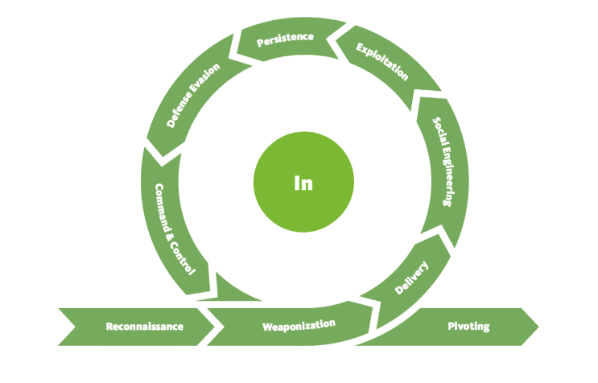
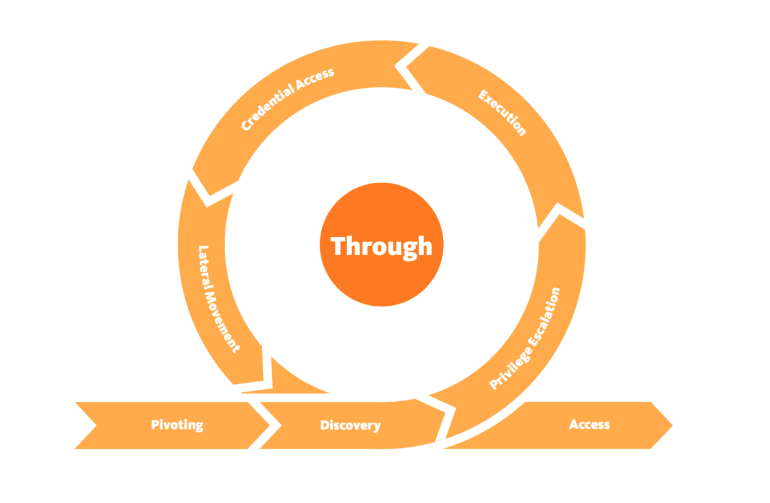
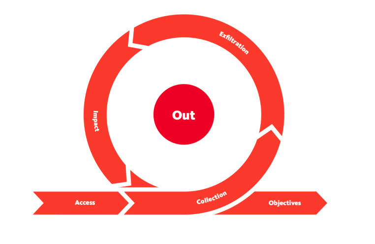

| The Unified Kill Chain, explained
- There is more lot information about this topic in here PDF
What is the unified kill chain
As the author said, “Cyber attacks are typically phased progressions towards strategic objectives. The Unified Kill Chains provides insight into the tactics that hackers employ to attain these objectives. This provides a solid basis to develop (or realign) defensive strategies to raise cyber resilience.”
the UKC (Unified Kill Chain) provides a model to defend against cyber attacks from the adversary’s perspective. The UKC offers security teams a blueprint for analysing and comparing threat intelligence.
The Unified Kill Chain describes 18 phases of attack based on Tactics, Techniques and Procedures (TTPs).
CYCLE 1: In

- Reconnaissance: The attacker performs research on the target using publicly available information, or in other words, researching, identifying and selecting targets using active or passive reconnaissance.
- Weaponisation: Setting up the needed infrastructure to host the command and executing attacks, or in other words, preparatory activities aimed at setting up the infrastructure required for the attack.
- Delivery: Techniques resulting in the transmission of a weaponized object to the targeted environment.
- Social Engineering: Techniques aimed at the manipulation of people to perform unsafe actions. The attacker will trick their target into performing untrusted and unsafe action against the payload they just delivered.
- Exploitation: If the attacker finds an existing vulnerability, a software or hardware weakness, in the network assets, they may use this to trigger their payload, or in other words, Techniques to exploit vulnerabilities in systems that may, amongst others, result in code execution.
- Persistence: Any access, action or change to a system that gives an attacker persistent presence on the system.
- Defence Evasion: Techniques an attacker may specifically use for evading detection or avoiding other defenses.
- Command & Control: Techniques that allow attackers to communicate with controlled systems within a target network, or in other words, using infrastructure that the attacker prepared to make a communication channel between the compromised system and the attacker’s infrastructure is established across the internet.
- This phase may be considered a loop as the attacker may be forced to change tactics or modify techniques if one fails to provide an entrance into the network.
CYCLE 2: Through

- Under this phase, attackers will be interested in gaining more access and privileges to assets within the network. The attacker may repeat this phase until the desired access is obtained.
- Pivoting: The system that the attacker may use for persistence will become the attack launchpad for other systems in the network, or in other words, tunneling traffic through a controlled system to other systems that are not directly accessible.
- Discovery: The attacker will seek to gather as much information about the compromised system, such as available users and data, or in other words, techniques that allow an attacker to gain knowledge about a system and its network environment.
- Privilege Escalation: Restricted access prevents the attacker from executing their mission. Therefore, they will seek higher privileges on the compromised systems by exploiting identified vulnerabilities or misconfigurations, or in other words, the result of techniques that provide an attacker with higher permissions on a system or network.
- Execution: With elevated privileges, malicious code may be downloaded and executed to extract sensitive information or cause further havoc on the system.
- Credential Access: Part of the extracted sensitive information would include login credentials stored in the hard disk or memory. This provides the attacker with more firepower for their attacks, or in other words, techniques resulting in the access of, or control over, system, service or domain credentials.
- Lateral Movement: Using the extracted credentials, the attacker may move around different systems or data storages within the network.
CYCLE 3: Out

- The Confidentiality, Integrity and Availability (CIA) of assets or services are compromised during this phase.
- Collection: After finding the jackpot of data and information, the attacker will seek to aggregate all they need. By doing so, the assets’ confidentiality would be compromised entirely, or in other words, techniques used to identify and gather data from a target network prior to exfiltration.
- Exfiltration: The attacker must get his loot out of the network. Various techniques may be used to ensure they have achieved their objectives without triggering suspicion.
- Impact: When compromising the availability or integrity of an asset or information, the attacker will use all the acquired privileges to manipulate, interrupt and sabotage, or in other words, techniques aimed at manipulating, interrupting or destroying the target system or data.
- Objectives: Attackers may have other goals to achieve that may affect the social or technical landscape that their targets operate within. Defining and understanding these objectives tends to help security teams familiarise themselves with adversarial attack tools and conduct risk assessments to defend their assets.
- Source: unifiedkillchain | tryhackme
- Wrote: December 3, 2022 | Azar 12, 1401
- Updated:
- Posted: December 3, 2022 | Azar 12, 1401